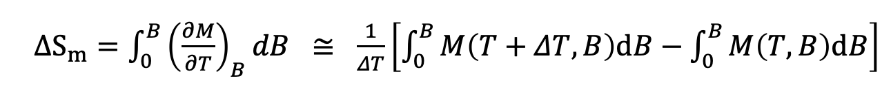
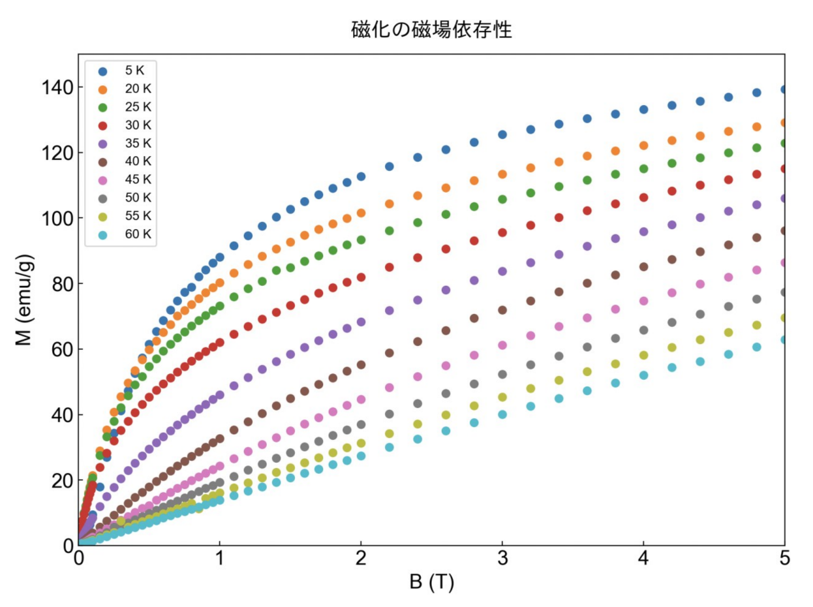

研究室におけるDXの個人的取り組み
今まで5~10時間かけていた作業を10分で完了させるものを個人的に作成しました！
測定した実験データをデータ抽出~グラフプロットまで工程をpython(主にmatplot)を使用してコード作成をしました．
今回作成したものは，磁気エントロピーΔSmを計算し，グラフプロットしたものです．
上記マクスウェルの関係を用いて得られた近似式では，2つの異なる温度での磁化曲線の面積の差を用いて，磁化の温度依存性からエントロピー変化を計算しています．磁化 M を温度 T と磁場 B の関数として測定し，これらのデータからエントロピー変化を求めます．具体的には、温度 T と温度 T + ΔT での磁化の積分値の差分を取り，これを温度変化 ΔT で割ることによって，磁場が変化するときの単位温度当たりの磁化変化（→磁気エントロピー変化）を計算します．
以下作成したコードです．
# step1：ファイル(実験データ)を1つのフォルダ(名前を"data")にまとめてフォルダ名を変更(__物質名___.dat → 10 K)
# step2：sample_weightを指定 + その他必要であれば詳細設定
# step3：実行
import os
import pandas as pd
import numpy as np
import matplotlib.pyplot as plt
import japanize_matplotlib
plt.rcParams['font.family'] = 'Arial'
plt.rcParams['font.size'] = 16
sample_weight = 0.0010 # step2 試料重さ(g)を指定してください
files = [f for f in os.listdir('data') if f.endswith('dat')]
ondojyun = []
for index, file in enumerate(files):
df = pd.read_csv(os.path.join('data', file), skiprows=30, sep=",")
subset = df.loc[:, df.columns[[2, 4]]]
subset.loc[:, 'Applied Field (Oe)'] = subset[subset.columns[0]]
subset.loc[:, 'Applied Field (T)'] = subset[subset.columns[0]] / 10000
subset.loc[:, 'M (emu/g)'] = subset[subset.columns[1]] / sample_weight
ondojyun.append((int(file.replace(' K.dat', '')), file, subset))
ondojyun.sort()
integral_results_7T = {}
temp_diff_results_7T = {}
integral_results_5T = {}
temp_diff_results_5T = {}
integral_results_2T = {}
temp_diff_results_2T = {}
# 積分
for temp, file, subset in ondojyun:
subset_2T = subset[subset['Applied Field (T)'] <= 2]
area_2T = np.trapz(subset_2T['M (emu/g)'], subset_2T['Applied Field (Oe)'])
integral_results_2T[file.replace('.dat', '')] = area_2T / 10000
for i in range(1, len(ondojyun)):
temp_diff = ondojyun[i][0] - ondojyun[i-1][0]
integral_diff_2T = integral_results_2T[ondojyun[i][1].replace('.dat', '')] - integral_results_2T[ondojyun[i-1][1].replace('.dat', '')]
temp_diff_results_2T[ondojyun[i][1].replace('.dat', '')] = integral_diff_2T / temp_diff
for temp, file, subset in ondojyun:
subset_5T = subset[subset['Applied Field (T)'] <= 5]
area_5T = np.trapz(subset_5T['M (emu/g)'], subset_5T['Applied Field (Oe)'])
integral_results_5T[file.replace('.dat', '')] = area_5T / 10000
for i in range(1, len(ondojyun)):
temp_diff = ondojyun[i][0] - ondojyun[i-1][0]
integral_diff_5T = integral_results_5T[ondojyun[i][1].replace('.dat', '')] - integral_results_5T[ondojyun[i-1][1].replace('.dat', '')]
temp_diff_results_5T[ondojyun[i][1].replace('.dat', '')] = integral_diff_5T / temp_diff
for temp, file, subset in ondojyun:
subset_7T = subset[subset['Applied Field (T)'] <= 7]
area_7T = np.trapz(subset_7T['M (emu/g)'], subset_7T['Applied Field (Oe)'])
integral_results_7T[file.replace('.dat', '')] = area_7T / 10000
for i in range(1, len(ondojyun)):
temp_diff = ondojyun[i][0] - ondojyun[i-1][0]
integral_diff_7T = integral_results_7T[ondojyun[i][1].replace('.dat', '')] - integral_results_7T[ondojyun[i-1][1].replace('.dat', '')]
temp_diff_results_7T[ondojyun[i][1].replace('.dat', '')] = integral_diff_7T / temp_diff
plt.figure(figsize=(10, 7))
for temp, file, subset in ondojyun:
plt.scatter(subset['Applied Field (T)'], subset['M (emu/g)'], label=file.replace('.dat', ''))
plt.xlabel('B (T)')
plt.ylabel('M (emu/g)')
plt.tick_params(axis='x', which='both', direction='in')
plt.tick_params(axis='y', which='both', direction='in')
plt.xlim(0, 5)
plt.ylim(0, 150)
plt.title('磁化の磁場依存性', font="IPAexGothic", y=1.02)
plt.legend(fontsize=10)
temps = [(ondojyun[i][0] + ondojyun[i-1][0]) / 2 for i in range(1, len(ondojyun))]
plt.figure(figsize=(10, 7))
plt.tick_params(axis='x', which='both', direction='in')
plt.tick_params(axis='y', which='both', direction='in')
temp_diff_vals_7T = list(temp_diff_results_7T.values())
temp_diff_vals_5T = list(temp_diff_results_5T.values())
temp_diff_vals_2T = list(temp_diff_results_2T.values())
#plt.plot(temps, temp_diff_vals_7T, 'ro-', markersize=5, label="0 - 7 T")
plt.plot(temps, temp_diff_vals_5T, 'bo-', markersize=5, label="0 - 5 T")
plt.plot(temps, temp_diff_vals_2T, 'go-', markersize=5, label="0 - 2 T")
plt.ylim(-15, 0)
plt.xlim(0, 70)
plt.xlabel('Temperature (K)')
plt.ylabel('$\Delta S_m$ (J/kg*K)')
plt.legend()
plt.show()
出力結果
この磁化の磁場依存性のグラフから，それぞれを積分．
以上より，ΔSの温度依存性のグラフのデータが得られるので，それらを記述．

結果として，私は研究員のために貴重な時間を確保することに成功しました．
しかしながら，一つの問題点が浮き彫りになりました．それは，自動化によって研究員の学習機会を失っている点です．従来，データ入力から積分に至るまでの手順を経験することで，エントロピー変化を求めるプロセスを理解していましたが，その過程を省略することで，研究員が考察を深める機会が奪われてしまうのです．
この問題を解決するために，最初は従来の方法で作業を行い，プロセスを理解した上で，2回目以降は新しく作成したツールを用いることを提案しました．また，コードの理解を深めることで，研究員に学習の機会を提供することが，重要だと考えています．